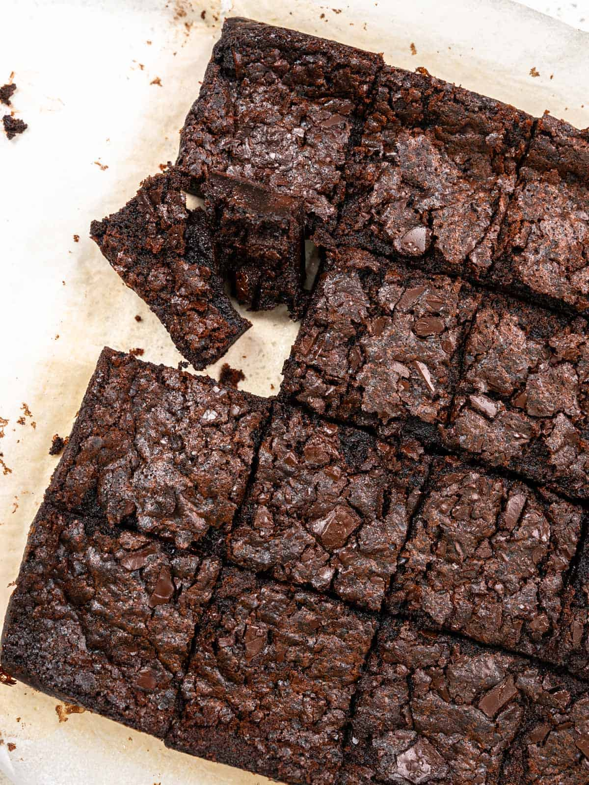

chewy mochi brownies~

Full recipe credits to Catherine Zhang's mochi brownies.
A cross-over between the classic chocolate brownie and mochi, these mochi brownies are rich and chocolatey with a chewy texture and crunchy crust that makes them irresistible.
Description:
Ingredients:
- 90g Unsalted butter (6 tbsp)
- 4g Instant coffee powder (2 tsp)
- 130g Glutinous rice flour (1 cup)
- 150g Granulated sugar (¾ cup)
- 40g Cocoa powder (½ cup)
- 7g Baking powder (1 ½ tsp)
- ¼ tsp Salt
- 360ml Whole milk ( 1 ½ cups)
- 2 Large eggs
- 100g Dark chocolate, roughly chopped
Steps
- Preheat the oven to 350F/180C and line an 8 inch baking pan with parchment paper
- In a small saucepan heat the butter for 3 minutes, or until melted
- Continue to heat the butter for another 3-5 minutes, or until it smells fragrant and there are brown specks on the bottom of the pan
- Remove from the heat and add the coffee powder, set aside to cool for 15 minutes or until room temperature
- In a large mixing bowl combine the glutinous rice flour, cocoa powder, sugar, baking powder, and salt, and whisk until combined
- Add the milk, the cooled brown butter, and eggs, and whisk until smooth
- Pour the batter into the prepared pan and scatter over the roughly chopped chocolate
- Bake for 45 minutes, or until a toothpick inserted in the centre emerges slightly gooey
- Place on a wire rack to cool completely